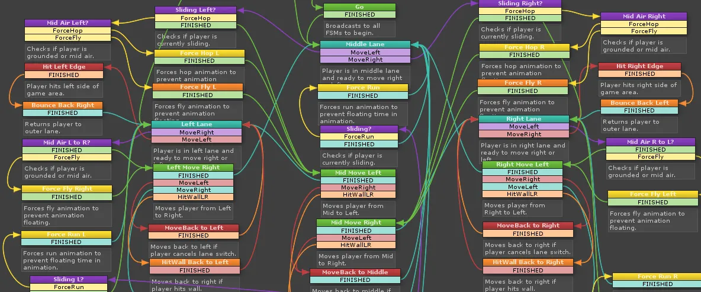

Run Attack or Jump
November 12, 2025

Ralph Katz at MIT discovered in 1982 that engineering teams peak at eighteen months, then decline. By year five, they develop "Not Invented Here" syndrome. 69% of engineers leave by year two. Some stay through decline. Some remain decades.
Engineering Identity Begins in University
Engineering identity begins in university as narrative construction: self-beliefs about competence and recognition within engineering.
Murphy's Law comes from Edward Murphy Jr., an Air Force engineer in the 1940s. Someone installed all sixteen sensors backwards in his experiment. His response--"Anything that can go wrong, will go wrong"--became engineering culture. Engineers prepare for what might break.
First-year work reinforces this. Code reviews reward thoroughness. Debugging validates analytical thinking. Engineers join "communities of practice" as guardians of quality, creators of elegant systems.
Around year two, engineers discover what organizations actually measure. The promotion cycle reveals the scoring system: velocity correlates with advancement. Visible features generate recognition. Framework migrations follow business cycles, not technical cycles.
Early-career engineers experience identity tension. Organizations measure what engineers didn't optimize for: shipping speed, feature count, stakeholder satisfaction. Engineers measured differently: code quality, prevented incidents, architectural elegance.
Utility Functions As Decision Explainers
Utility functions come from economics, where they explain how people make decisions. John von Neumann and Oskar Morgenstern formalized them in 1944 while developing game theory. Everyone has an internal scoring system that weighs different outcomes.
An ice cream shop has three options. For us: chocolate flavor (+10) in green color (-5) = 5 points. Vanilla flavor (+3) in blue color (+7) = 10 points. Strawberry flavor (-4) in pink color (0) but half price (+8) = 4 points. We pick vanilla--highest total score. Our friend scores differently: chocolate (+8) green (-10) = -2, vanilla (+2) blue (+15) = 17, strawberry (-2) pink (+3) cheap (+2) = 3. They also pick vanilla but for different reasons. Someone else weights price at +20, making strawberry win despite negative taste scores.
The Sims pioneered this for game NPCs in 2000. Each Sim scores activities: hunger makes "eat" score high, fun (-6) makes "watch TV" attractive, bladder (-9) overrides everything. NPCs appear intelligent because they're maximizing utility scores--exactly like we're picking ice cream.
Utility functions explain why different people make different choices facing identical situations. Someone leaves a high-paying job for a startup--their function weights autonomy over salary. Another stays decades at one company--their function weights stability over growth. There's no universal optimum--only optimization within individual functions.
The Mercenary: Market Value and Optionality
Utility function weights market value and optionality highest. Each role must expand future choices. They stay eighteen to thirty months, the duration that maximizes equity value plus resume credential divided by time invested.
Their function weights network breadth, skill diversity, and market signals. Regular interviewing maintains market calibration. When markets offered 20-30% switching premiums, movement clearly dominated their utility calculation. At today's near-parity (4.8% vs 4.6% for stayers), optionality value still exceeds immediate compensation in their weighting.
They see multiple approaches to similar problems. Their expertise centers on adoption and integration, skills that transfer between organizations.
The Builder: Technical Craft and Elegance
These engineers' utility function weights technical craft and system elegance highest. They optimize for the complete engineering experience: conception through iteration. They stay two to four years, aligning with Katz's peak performance window.
Their function weights architectural quality, code elegance, and problem depth. The day job provides resources while side projects provide creative control--dual optimization paths. GitHub contributions and personal projects score high because they demonstrate pure engineering without organizational constraints.
The Survivor: Sustainability and Predictability
These engineers' utility function weights sustainability and predictability highest. They optimize for minimal variance--steady state dominates growth in their calculations. They stay five years, often decades, minimizing transition costs.
Their function weights institutional knowledge value and sustainable pace. They become repositories of undocumented decisions and historical context. They speak directly in meetings because political maneuvering has negative weight in their function.
Legacy system expertise scores higher than new framework knowledge in their function. Their skills center on specific systems and contexts that become increasingly valuable within the organization.
We Need All Three
The three engineer types demonstrate utility functions in action--exactly like picking ice cream. Same environment, same choices available, different utility functions--therefore different games emerge.
Organizations create multiple games by rewarding different things. Technical excellence creates Builder incentives. Visibility creates Mercenary mobility. Institutional knowledge creates Survivor stability.
Organizations need all three: fresh perspectives (Mercenaries), core systems (Builders), continuity (Survivors).
A prototypical ten-person team:
- Mercenaries (4-5 people): Various mobility stages. Someone arriving, contributing, already networking out. Bring external practices, prevent stagnation.
- Builders (3-4 people): Creating core systems through architecting, implementing, perfecting. Generate actual value.
- Survivors (1-2 people): Hold institutional memory. Know why the database is structured uniquely, which systems connect how. Enable other games.
Resetting Games
Organizations undergo periodic apoptosis--programmed team death that prevents calcification. Biology discovered cells must die for organisms to live. Organizations discovered teams must reorganize before reaching Katz's five-year stagnation.
Reorganizations reset games. Mercenaries use them as exits. Builders see projects shift, forcing re-evaluation. Survivors become more valuable as others leave.
Promotions trigger identity re-evaluation. Builder-turned-manager adjusts craft identity. Becomes Mercenary (optimize for next role) or Survivor (accept steady state).
Self-Regulation
The three-game system self-regulates without coordination. Mercenaries leave before Katz's five-year decline, bringing fresh perspectives. Builders work through peak windows creating value. Survivors provide continuity despite churn.
Each optimizes individually while the system maintains balance. Too many Mercenaries? Knowledge gaps emerge. Too many Survivors? Innovation slows. Too many Builders? Maintenance suffers. Distribution adjusts through natural attrition and hiring.
Adding people to late projects makes them later (Brooks' Law), unless they're Mercenaries who contribute immediately. Teams take "a year to fire on all cylinders" (Gartner), unless Mercenaries provide immediate external knowledge.
Which Game Are We Playing?
Nobody's purely one type. We're all weighted combinations--60% Builder, 30% Mercenary, 10% Survivor. Or 45% Survivor, 40% Builder, 15% Mercenary. The weights shift with life circumstances. New mortgage? Survivor weight increases. Learned everything at current job? Mercenary weight rises. Found an interesting problem? Builder weight spikes.
The Sims would render us with three progress bars: Market Value, Technical Mastery, Institutional Knowledge. Each action fills different bars. A recruiter coffee fills Market Value. Refactoring legacy code fills Institutional Knowledge. That side project fills Technical Mastery. We're constantly, unconsciously optimizing our personal weighted sum.
If you are feeling restless, your weights are probably recalibrating, and that's a good thing.
References
Core Research: Katz (MIT 1982): teams peak 1.5 years, decline by five. Zippia (2024): 69% engineers leave within two years. Celential.ai (478,000 engineers): Silicon Valley averages 2.7/2.3 years. Schein (1978): career anchors framework. Arthur & Rousseau (1996): The Boundaryless Career. Ibarra (1999): "Provisional Selves."
Compensation & Turnover: Atlanta Fed/Fortune (Feb 2025): switching premium 4.8% vs 4.6%. Dice (2024): 36% received merit raises, 59% feel underpaid. IEEE Software (2020): 35-36% yearly turnover, replacement costs 150-250% salary.
Theory: March (1991): "Exploration and Exploitation." Meyer & Allen (1991): three-component commitment model. Von Neumann & Morgenstern (1944): utility functions. Brooks' Law (1975). Walsh & Ungson (1991): organizational memory.